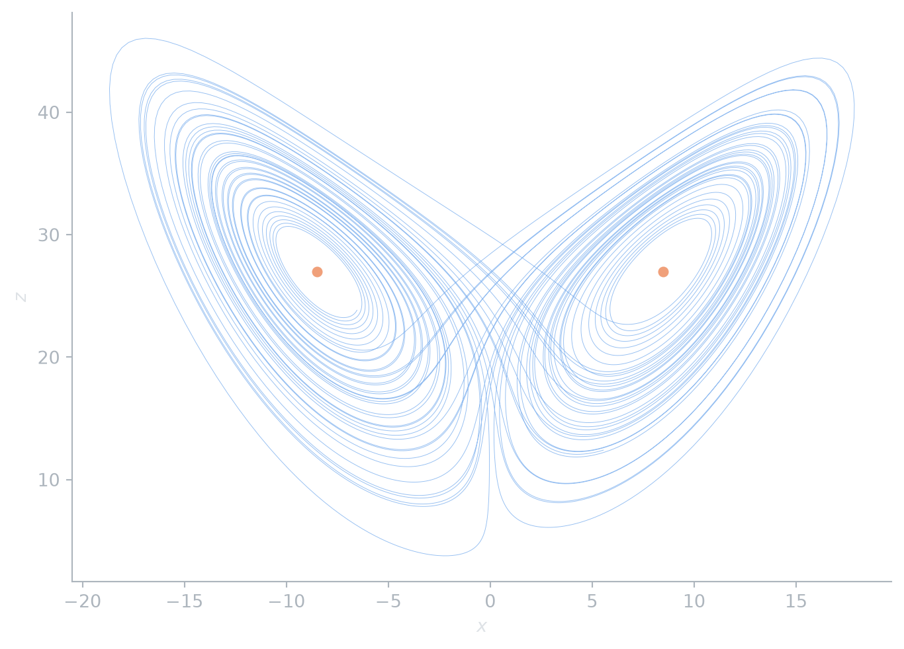
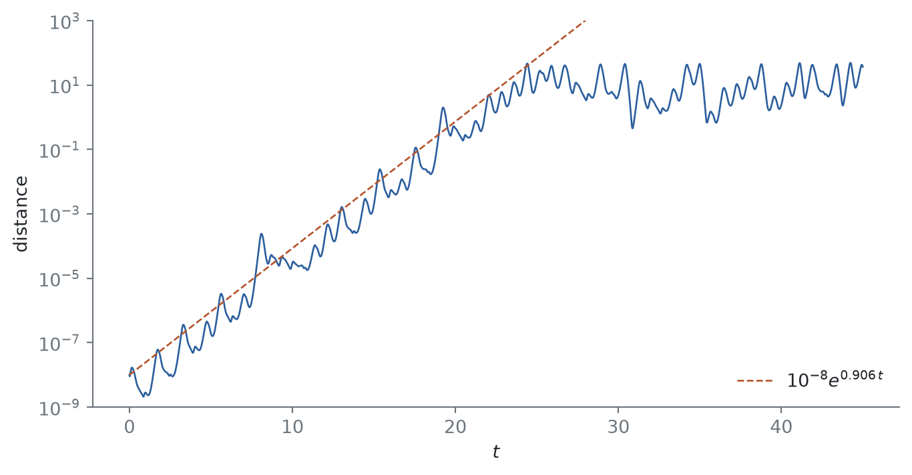
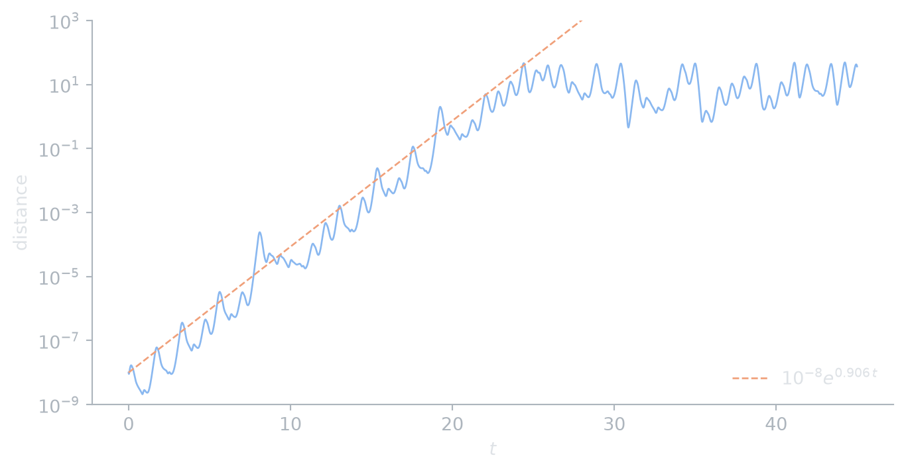

The Lorenz system
chaos
flows
Three equations from a convection model that gave chaos its butterfly: symmetry, dissipation, equilibria and sensitive dependence.
The Poincaré–Bendixson theorem rules out chaos for planar flows. Lorenz (1963) found it in three dimensions, in a drastically truncated model of convection: \[ \dot x = \sigma (y - x), \qquad \dot y = x(\rho - z) - y, \qquad \dot z = xy - \beta z. \tag{1}\] Lorenz’s parameters, used throughout, are \(\sigma = 10\), \(\beta = 8/3\) and \(\rho = 28\).
Basic structure
Three properties can be read off Equation 1 directly.
- Symmetry. The equations are unchanged by \((x, y, z) \mapsto (-x, -y, z)\), so every trajectory has a mirror twin.
- Dissipation. The divergence of the vector field is \(-(\sigma + 1 + \beta) < 0\), a constant. By Liouville’s theorem, volumes in phase space shrink like \(e^{-(\sigma + 1 + \beta)t}\), so the attractor has zero volume.
- Equilibria. The origin is always an equilibrium. For \(\rho > 1\) there are two more, \[ C_\pm = \left(\pm\sqrt{\beta(\rho - 1)},\ \pm\sqrt{\beta(\rho - 1)},\ \rho - 1\right). \]
Proposition 1 For \(\rho < 1\) every trajectory of Equation 1 tends to the origin.
Proof. Take \(V = x^2/\sigma + y^2 + z^2\). A direct computation gives \[ \tfrac12 \dot V = -\left(x - \tfrac{\rho + 1}{2}\,y\right)^2 - \left(1 - \left(\tfrac{\rho + 1}{2}\right)^2\right) y^2 - \beta z^2. \] For \(\rho < 1\) we have \((\rho + 1)/2 < 1\), so \(\dot V < 0\) away from the origin. Since \(V\) is radially unbounded, the origin is globally asymptotically stable by the Lyapunov and LaSalle theorems.
As \(\rho\) increases, \(C_\pm\) appear at \(\rho = 1\) and are stable until a subcritical Hopf bifurcation at \[ \rho_H = \frac{\sigma(\sigma + \beta + 3)}{\sigma - \beta - 1} \approx 24.74. \] At \(\rho = 28\) all three equilibria are unstable. Yet trajectories stay bounded, since every one eventually enters a fixed large ellipsoid (Strogatz 2015, sec. 9.2). Combined with the dissipation above, they wander forever on a bounded set of zero volume without settling down.
The attractor
Code
sigma, beta, rho = 10.0, 8 / 3, 28.0
lorenz = lambda u: np.array([sigma * (u[1] - u[0]), u[0] * (rho - u[2]) - u[1], u[0] * u[1] - beta * u[2]])
t, u = rk4(lorenz, [1.0, 1.0, 1.0], 60, h=0.005)
u = u[t > 5]
c_eq = np.sqrt(beta * (rho - 1))
def draw(fig, ax, c):
ax.plot(u[:, 0], u[:, 2], color=c.accent, lw=0.35, alpha=0.9)
ax.plot([c_eq, -c_eq], [rho - 1, rho - 1], "o", color=c.accent2, ms=5)
ax.set(xlabel=r"$x$", ylabel=r"$z$")
themed(draw, figsize=(7, 5))The trajectory circles one equilibrium, then the other, switching in a sequence that looks random. Whether this picture really contains a strange attractor, rather than being a numerical artifact, stayed open until Tucker (2002) settled it with a computer-assisted proof.
Sensitive dependence
Figure 2 follows two trajectories that start \(10^{-8}\) apart on the attractor. Their distance grows roughly like \(e^{\lambda_1 t}\), where \(\lambda_1 \approx 0.906\) is the largest Lyapunov exponent of the attractor, until it reaches the size of the attractor itself. After that the two trajectories are unrelated. This is why weather forecasts have a horizon, however good the model.
Code
start = u[-1] # a point already on the attractor, from the previous figure
t, a = rk4(lorenz, start, 45, h=0.005)
_, b = rk4(lorenz, start + [1e-8, 0, 0], 45, h=0.005)
dist = np.linalg.norm(a - b, axis=1)
def draw(fig, ax, c):
ax.semilogy(t, dist, color=c.accent, lw=1)
ax.semilogy(t, 1e-8 * np.exp(0.906 * t), "--", color=c.accent2, lw=1, label=r"$10^{-8} e^{0.906\,t}$")
ax.set(xlabel=r"$t$", ylabel="distance", ylim=(1e-9, 1e3))
ax.legend(loc="lower right")
themed(draw, figsize=(7, 3.6))

For more on the Lorenz equations, see Strogatz (2015, ch. 9) and Hirsch et al. (2013, ch. 14).
References
Hirsch, Morris W., Stephen Smale, and Robert L. Devaney. 2013. Differential Equations, Dynamical Systems, and an Introduction to Chaos. 3rd ed. Academic Press.
Lorenz, Edward N. 1963. “Deterministic Nonperiodic Flow.” Journal of the Atmospheric Sciences 20 (2): 130–41.
Strogatz, Steven H. 2015. Nonlinear Dynamics and Chaos. 2nd ed. Westview Press.
Tucker, Warwick. 2002. “A Rigorous ODE Solver and Smale’s 14th Problem.” Foundations of Computational Mathematics 2 (1): 53–117.
Citation
BibTeX citation:
@online{le2026,
author = {Le, Nam},
title = {The {Lorenz} System},
date = {2026-09-12},
url = {https://dynamics.namln.org/posts/2026-09-12-lorenz-system/},
langid = {en}
}
For attribution, please cite this work as:
Le, Nam. 2026. “The Lorenz System.” September 12. https://dynamics.namln.org/posts/2026-09-12-lorenz-system/.